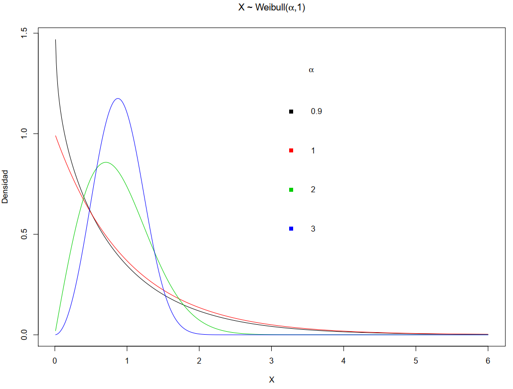
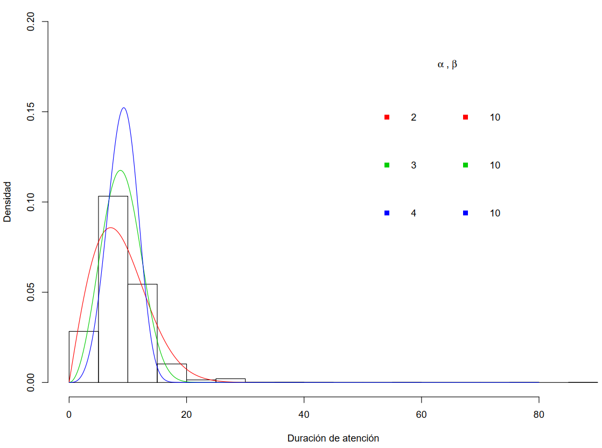

Capítulo 8 Modelo: Weibull
8.1 Función de densidad f
Decimos que una variable continua \(X\) es Gamma y se denota por \[X \sim Weibull(\alpha,\beta) \ , \ \alpha > 0 \ , \ \beta >0\]
Su función de densidad es \[f(x) = \left \{ \begin{array}{ccc} \frac{\alpha}{\beta} \left ( \frac{x}{\beta} \right )^{\alpha-1} e^{- \left( \frac{x}{\beta} \right)^{\alpha}} & , & x > 0 \\ 0 & , & x \leq 0 \end{array} \right.\] donde \((\alpha,\beta)\) son los parametros de forma y escala, respectivamente.
8.2 Función acumulada F
La función de distribución acumulada es \[F(x) = \left \{ \begin{array}{ccc} 1 - e^{- \left( \frac{x}{\beta} \right)^{\alpha}} & , & x > 0 \\ 0 & , & x \leq 0 \end{array} \right.\]
La esperanza y varianza son
\[\begin{aligned} E[X] &=& \beta \Gamma \left ( 1+ \frac{1}{\alpha} \right ) \nonumber \\ Var[X] &=& \beta^2 \left [ \Gamma \left ( 1+ \frac{2}{\alpha} \right ) - \left ( \Gamma \left ( 1+ \frac{1}{\alpha} \right ) \right )^2 \right ] \nonumber \end{aligned}\]

8.3 Ejercicios
8.4 Calculos en R
Supongamos que \(X \sim Weibull(\alpha=2,\beta=2)\)
\(P(X\leq 1)\)
pweibull(1,2,2)## [1] 0.2211992# 0.2211992- \(P(X > 4) = 1- P(X \leq 4)\)
1 - pweibull(4,2,2)## [1] 0.01831564- \(P(1 \leq X \leq 10) = F(10) - F(2)\)
pweibull(10,2,2) - pweibull(1,2,2)## [1] 0.7788008- El primer quartil \(Q_1\)
qweibull(0.25,2,2)## [1] 1.072728.4.1 Caso: Duración de atención
Sea \(X\) la duración de la atención en minutos
Supongamos que \(X\) se modela via \[X \sim Weibull(\alpha,\beta)\]
Comparación
A partir de los datos:
| \(\bar{X}\) | \(S_X^2\) | \(Q_2\) |
|---|---|---|
| 11.13 | 21.9 | 10 |
- A partir de modelos weibull con diferentes \(\alpha\) y \(\beta\):
| \(\alpha\) | \(\beta\) | \(E[X]\) | \(Var[X]\) |
|---|---|---|---|
| 2 | 10 | 8.86 | 21.46 |
| 3 | 10 | 8.92 | 10.53 |
| 4 | 10 | 9.06 | 6.47 |
8.4.2 Duración de atención
En R, se puede obtener la mediana, media y varianza para el modelo.
Medianas:
qweibull(0.5,2,10)## [1] 8.325546qweibull(0.5,3,10)## [1] 8.84997qweibull(0.5,4,10)## [1] 9.124443- Cálculo de la media:
fun210 = function(x) x*dweibull(x,2,10)
fun310 = function(x) x*dweibull(x,3,10)
fun410 = function(x) x*dweibull(x,4,10)
funx2_210 = function(x) x^2*dweibull(x,2,10)
funx2_310 = function(x) x^2*dweibull(x,3,10)
funx2_410 = function(x) x^2*dweibull(x,4,10)
E210 = integrate(fun210,0,Inf)
E210## 8.862269 with absolute error < 0.00013E310 = integrate(fun310,0,Inf)
E310## 8.929795 with absolute error < 8e-06E410 = integrate(fun410,0,Inf)
E410## 9.064025 with absolute error < 5.5e-05- También, es posible calcular la varianza:
Var210 = integrate(funx2_210,0,Inf)$value - E210$value^2
Var210## [1] 21.46018Graficando
